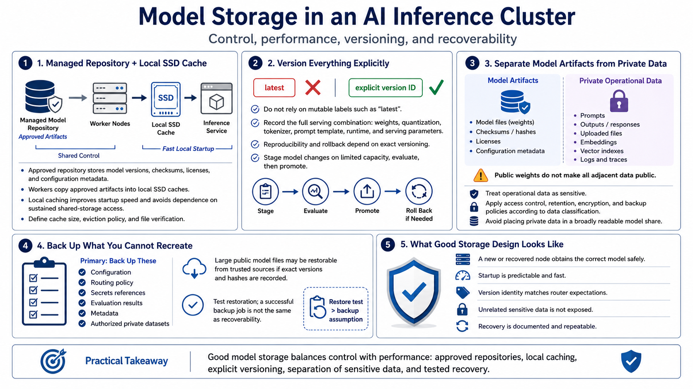

Storage, Models, and Data Management
Connecting to LMS... Progress: in progress

Narration
Model storage should balance control with startup performance. A managed repository can hold approved model versions, checksums, licenses, and configuration metadata. Workers can copy approved artifacts into local SSD caches so inference does not depend on sustained access to shared storage. Define cache size, eviction policy, and how a worker verifies that its local copy matches the version advertised to the router.
Use explicit version identifiers rather than a mutable label such as latest. Model weights, quantization, tokenizer, prompt template, runtime, and serving parameters together influence behavior. Record that combination so results can be reproduced and a problematic release can be rolled back. Stage model changes on limited capacity, run representative evaluations, and promote only after functional and performance checks pass.
Separate model artifacts from private operational data. Prompts, outputs, uploaded files, embeddings, vector indexes, and logs can contain sensitive information even when the model weights are public. Apply access controls, retention schedules, encryption, and backup policies according to data classification. Avoid placing private data in a broadly readable model share simply because every worker can access it.
Back up what cannot be recreated: configuration, routing policy, secrets references, evaluation results, metadata, and authorized private datasets. Large public model files may be restored from trusted sources if their exact versions and hashes are recorded. Test restoration rather than equating a completed backup job with recoverability. Storage design succeeds when a new or recovered node can obtain the right model safely, start predictably, and avoid exposing unrelated data.